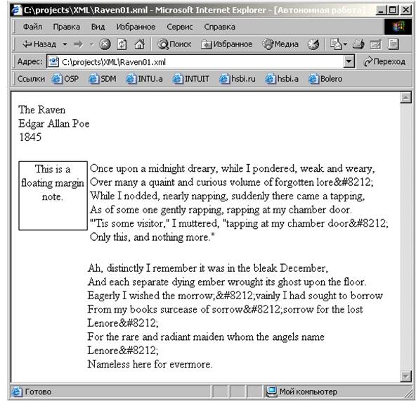
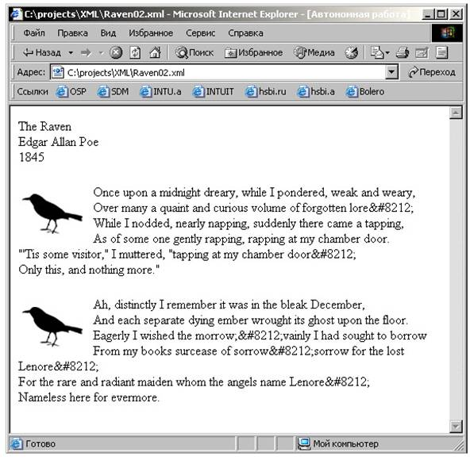

Задания к лекции №7
Задания
1. Создайте поле примечаний
В вашем текстовом редакторе
откройте файл таблицы стилей Raven.css, представленный в Листинге
7.6.
Модифицируйте таблицу стилей,
чтобы она приняла вид, представленный в Листинге 7.7.
Листинг 7.7. Raven01.css
/* File Name: Raven01.css */
POEM
{font-size:12pt}
POEM, TITLE, AUTHOR, DATE, NOTE, STANZA, VERSE
{display:block}
DATE
{margin-bottom:.25in}
STANZA
{margin-left:1in;
margin-bottom:.25in}
NOTE
{border-style:solid;
border-width:1px;
text-align:center;
width:1in;
height:1in;
float:left}
К оригинальной таблице стилей
добавлены следующие новшества.
Для элементов STANZA установлено
левое поле в один дюйм.
Элемент NOTE (который вы добавите
в документ позднее) отформатирован как поле примечания, отображаемое в зоне
левого поля первого элемента STANZA. Для этого:
-
для него установлено сплошное
обрамление с толщиной линий 1 пиксель;
-
текст выровнен по
центру;
-
для свойств width и height
установлено значение в один дюйм;
-
установлен режим обтекания с
размещением слева от последующего текста.
Воспользуйтесь командой Save As
(Сохранить как) вашего текстового редактора, чтобы сохранить копию
модифицированного документа под именем Raven01.css.
В вашем текстовом редакторе
откройте документ Raven.xml, представленный в Листинге
7.6.
В файле Raven.xml отредактируйте
инструкцию по обработке xml-stylesheet в начале файла, чтобы он указывал на
новую таблицу стилей, которую вы только что создали – Raven01.css – следующим
образом:
<?xml-stylesheet type="text/css"
href="Raven01.css"?>
В документе Raven.xml добавьте
следующий новый элемент непосредственно над элементом STANZA:
<NOTE>This is a floating margin note. </NOTE>
Поскольку в таблице стилей для
элемента NOTE вы установили свойство float:left , он будет располагаться слева
от последующего текста документа – т.е., слева от первого элемента
STANZA.
Воспользуйтесь командой Save As
(Сохранить как) вашего текстового редактора, чтобы сохранить копию
модифицированного документа под именем Raven01.xml.
Весь документ представлен в
Листинге 7.8.
Листинг 7.8.
Raven01.xml (html, txt)
<?xml version="1.0"?>
<!-- File Name: Raven01.xml -->
<?xml-stylesheet type="text/css"
href="Raven01.css"?>
<POEM>
<TITLE>The Raven</TITLE>
<AUTHOR>Edgar Allan Poe</AUTHOR>
<DATE>1845</DATE>
<NOTE>This is a floating margin
note.</NOTE>
<STANZA>
<VERSE>Once
upon a midnight dreary, while I pondered, weak and
weary,</VERSE>
<VERSE>Over
many a quaint and curious volume of forgotten
lore—</VERSE>
<VERSE>While I nodded, nearly napping, suddenly there came a
tapping,</VERSE>
<VERSE>As
of some one gently rapping, rapping at my chamber
door.</VERSE>
<VERSE>"'Tis some visitor," I muttered, "tapping at my chamber
door—</VERSE>
<VERSE>Only
this, and nothing more."</VERSE>
</STANZA>
<STANZA>
<VERSE>Ah,
distinctly I remember it was in the bleak
December,</VERSE>
<VERSE>And
each separate dying ember wrought its ghost upon the
floor.</VERSE>
<VERSE>Eagerly I wished the morrow;—vainly I had sought
to borrow</VERSE>
<VERSE>From
my books surcease of sorrow—sorrow for the lost
Lenore—</VERSE>
<VERSE>For
the rare and radiant maiden whom the angels name
Lenore—</VERSE>
<VERSE>Nameless here for
evermore.</VERSE>
</STANZA>
</POEM>
Откройте файл Raven01.xml в
Internet Explorer 5. Он будет иметь вид, как показано на рисунке
7.38.

Рис. 7.38.
2. Отобразите обтекаемое текстом
изображение
В вашем текстовом редакторе
откройте таблицу стилей Raven.css, представленную в Листинге
7.5.
Модифицируйте таблицу стилей в
соответствии с Листингом 7.9.
Главным дополнением является
введение правила для элемента IMAGE:
IMAGE
{background-image:url(Raven.bmp);
background-repeat:no-repeat;
background-position:center;
width:89px;
height:58px;
float:left}
Элемент IMAGE является пустым
элементом (его вы позднее добавите в XML-документ), созданным для отображения
обтекаемого текстом рисунка. Элемент не содержит текста, но ему назначен фоновый
рисунок (с помощью трех свойств, устанавливаемых в правиле), который будет
отображен вместо текста.
Свойствам width и height элемента
присвоены точные значения ширины и высоты изображения. Поскольку файл рисунка
является растровым (точечным), важно указать размер в пикселях, чтобы
изображение могло быть полностью отображено на любом мониторе в любом
графическом режиме. Заметим, что если вы не присвоите значений свойствам width и
height элемента, размер его будет нулевым, поскольку он не содержит текста и
поэтому будет скрыт.
Наконец, вы установили для
свойства float значение left , чтобы изображение располагалось слева от
обтекающего его текста документа.
Воспользуйтесь командой Save As
(Сохранить как) вашего текстового редактора, чтобы сохранить копию
модифицированного документа под именем Raven02.css.
/* File Name: Raven02.css */
POEM
{font-size:12pt}
POEM, TITLE, AUTHOR, DATE, IMAGE, STANZA, VERSE
{display:block}
DATE, STANZA
{margin-bottom:.25in}
IMAGE
{background-image:url(Raven.bmp);
background-repeat:no-repeat;
background-position:center;
width:89px;
height:58px;
float:left}
Листинг 7.9. Raven02.css
(html, txt)
В вашем текстовом редакторе
откройте документ Raven.xml, представленный в Листинге
7.6.
В документе Raven.xml
отредактируйте инструкцию по обработке xml-stylesheet в начале файла, чтобы она
указывала на новую таблицу стилей, которую вы только что создали – Raven02.css –
следующим образом:
<?xml-stylesheet type="text/css"
href="Raven02.css"?>
В документ Raven.xml добавьте
следующий пустой элемент IMAGE непосредственно перед каждым элементом STANZA:
<IMAGE
/>
Поскольку вы назначили элементам
IMAGE свойство float:left, они будут обтекаться текстом и располагаться слева от
элемента STANZA (который содержит последующий текст
документа).
Воспользуйтесь командой Save As
(Сохранить как) текстового редактора, чтобы сохранить копию модифицированного
документа под именем Raven02.xml.
Полный документ представлен в
Листинге 7.10.
Листинг 7.10. Raven02.xml
<?xml version="1.0"?>
<!-- File Name: Raven02.xml -->
<?xml-stylesheet type="text/css"
href="Raven02.css"?>
<POEM>
<TITLE>The Raven</TITLE>
<AUTHOR>Edgar Allan Poe</AUTHOR>
<DATE>1845</DATE>
<IMAGE />
<STANZA>
<VERSE>Once
upon a midnight dreary, while I pondered, weak and
weary,</VERSE>
<VERSE>Over
many a quaint and curious volume of forgotten
lore—</VERSE>
<VERSE>While I nodded, nearly napping, suddenly there came a
tapping,</VERSE>
<VERSE>As
of some one gently rapping, rapping at my chamber
door.</VERSE>
<VERSE>"'Tis some visitor," I muttered, "tapping at my chamber
door—</VERSE>
<VERSE>Only
this, and nothing more."</VERSE>
</STANZA>
<IMAGE />
<STANZA>
<VERSE>Ah,
distinctly I remember it was in the bleak
December,</VERSE>
<VERSE>And
each separate dying ember wrought its ghost upon the
floor.</VERSE>
<VERSE>Eagerly I wished the morrow;—vainly I had sought
to borrow</VERSE>
<VERSE>From
my books surcease of sorrow—sorrow for the lost
Lenore—</VERSE>
<VERSE>For
the rare and radiant maiden whom the angels name
Lenore—</VERSE>
<VERSE>Nameless here for
evermore.</VERSE>
</STANZA>
</POEM>
Откройте файл Raven02.xml в
Internet Explorer 5. Он будет отображен, как показано на рисунке
7.39.

Рис.
7.39.
2. Создайте документ
Откройте новый, пустой текстовый
файл в вашем текстовом редакторе и введите XML-документ, представленный в
Листинге 7.12.
Листинг 7.12. Raven04.xml
<?xml version="1.0"?>
<!-- File Name: Raven04.xml -->
<?xml-stylesheet type="text/css"
href="Raven04.css"?>
<POEM>
<TITLE>The Raven</TITLE>
<AUTHOR>
Edgar Allan
Poe
<AUTHOR-BIO>Edgar Allan Poe was an American writer who lived from
1809 to 1849.</AUTHOR-BIO>
</AUTHOR>
<DATE>1845</DATE>
<IMAGE/>
<STANZA>
<VERSE>Once
upon a midnight dreary, while I pondered, weak and
weary,</VERSE>
<VERSE>Over
many a quaint and curious volume of forgotten
lore—</VERSE>
<VERSE>While I nodded, nearly napping, suddenly there came a
tapping,</VERSE>
<VERSE>As
of some one gently rapping, rapping at my chamber
door.</VERSE>
<VERSE>"'Tis some visitor," I muttered, "tapping at my chamber
door—</VERSE>
<LASTVERSE>Only this, and nothing
more."</LASTVERSE>
</STANZA>
<IMAGE/>
<STANZA>
<VERSE>Ah,
distinctly I remember it was in the bleak
December,</VERSE>
<VERSE>And
each separate dying ember wrought its ghost upon the
floor.</VERSE>
<VERSE>Eagerly I wished the morrow;—vainly I had sought
to borrow</VERSE>
<VERSE>From
my books surcease of sorrow—sorrow for the lost
Lenore—</VERSE>
<VERSE>For
the rare and radiant maiden whom the angels name
Lenore—</VERSE>
<LASTVERSE>Nameless here for
evermore.</LASTVERSE>
</STANZA>
<IMAGE/>
<STANZA>
<VERSE>And
the silken sad uncertain rustling of each purple
curtain</VERSE>
<VERSE>Thrilled me—filled me with fantastic terrors never
felt before;</VERSE>
<VERSE>So
that now, to still the beating of my heart, I stood
repeating:</VERSE>
<VERSE>"'Tis some visitor entreating entrance at my chamber
door—</VERSE>
<VERSE>Some
late visitor entreating entrance at my chamber
door;</VERSE>
<LASTVERSE>This it is, and nothing
more."</LASTVERSE>
</STANZA>
<IMAGE/>
<STANZA>
<VERSE>Presently my soul grew stronger; hesitating then no
longer,</VERSE>
<VERSE>"Sir," said I, "or Madam, truly your forgiveness I
implore;</VERSE>
<VERSE>But
the fact is I was napping, and so gently you came
rapping,</VERSE>
<VERSE>And
so faintly you came tapping, tapping at my chamber
door,</VERSE>
<VERSE>That
I scarce was sure I heard you"—here I opened wide the
door;—</VERSE>
<LASTVERSE>Darkness there, and nothing
more.</LASTVERSE>
</STANZA>
</POEM>
Обратите внимание на следующие
важные особенности документа Raven04.xml:
-
к нему присоединена таблица
каскадных стилей Raven04.css, которую вы создадите в следующем
упражнении;
-
перед каждым элементом STANZA
расположен пустой элемент IMAGE. Вы используете элемент IMAGE для отображения
рисунка ворона в начале каждой строфы;
-
последняя строка в каждой
строфе помещена в специальный элемент с именем LASTVERSE. Это дает вам
возможность форматировать последнюю строку отличным образом от остальных строк.
(Она выровнена не по левому краю, а по правому.)
Воспользуйтесь командой Save
(Сохранить) вашего текстового редактора, чтобы сохранить документ на вашем
жестком диске как Raven04.xml.
3. Создайте таблицу стилей
Откройте новый, пустой файл в
вашем текстовом редакторе и введите таблицу каскадных стилей, представленную в
Листинге 7.13.
Листинг 7.12. Raven04.css
/* File Name: Raven04.css */
POEM
{font-size:12pt;
width:5.5in;
padding:1em;
border-width:1px;
background-color:rgb(225,225,225)}
POEM, TITLE, AUTHOR, DATE, STANZA
{display:block;
margin-bottom:1em}
AUTHOR-BIO
{display:none}
TITLE, AUTHOR, DATE
{font-family:Arial,sans-serif;
text-align:center}
DATE
{font-style:italic}
TITLE
{font-size:16pt;
font-weight:bold;
letter-spacing:.25em}
IMAGE
{background-image:url(RavShade.bmp);
background-repeat:no-repeat;
background-position:center;
width:89px;
height:58px;
float:left}
STANZA
{color:navy;
line-height:1.25em}
VERSE
{display:block}
LASTVERSE
{display:block;
text-align:right}
Относительно этой таблицы стилей
следует иметь в виду:
-
таблица стилей демонстрирует
почти все свойства, рассмотренные в этой лекции;
-
все использованные в таблице
стилей приемы были рассмотрены в предыдущих разделах данной
лекции;
-
файл рисунка (RavShade.bmp),
отображенный с использованием элементов IMAGE, представляет собой тот же
рисунок, который вы отображали в предшествующих версиях документа Raven.xml, за
исключением того, что он имеет теневой фон, соответствующий цвету фона элемента
POEM;
-
таблица стилей скрывает
содержимое элемента AUTHOR-BIO путем присвоения значения none его свойству
display .
Воспользуйтесь командой Save
(Сохранить), чтобы сохранить документ на вашем жестком диске под именем
Raven04.css.
Отобразите документ, открыв файл
Raven04.xml непосредственно в Internet Explorer
5.